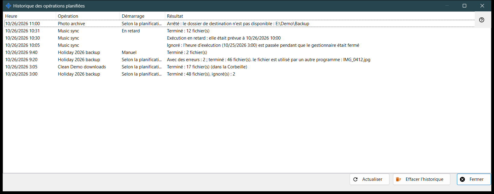
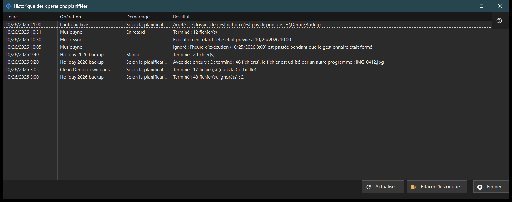

Historique des opérations planifiées
Objectif
Affiche les exécutions et les notes récentes des opérations planifiées sur les fichiers, telles qu'elles sont consignées dans le journal. Les opérations planifiées sur les fichiers s'installent avec Share Manager - un seul paquet, sans téléchargement séparé et sans service Windows - et s'exécutent tant que Share Manager fonctionne dans votre session ouverte ; elles n'ont besoin ni de partage de dossiers, ni de serveur, ni de port ouvert, ni de droits d'administrateur. Elle s'ouvre depuis «Historique..» dans la fenêtre «Opérations planifiées» et sur la page «Opérations sur fichiers planifiées» des réglages de Share Manager.


Dans cet ordre
- Lisez la liste : Heure, Opération, Démarrage et Résultat.
- Élargissez la fenêtre si un résultat est long.
- Cliquez sur «Actualiser» pour relire le journal.
- Cliquez sur «Effacer l'historique» et confirmez pour le vider.
- Cliquez sur «Fermer».
Les éléments
Colonnes
Heure, Opération (son nom), Démarrage et Résultat. Démarrage vaut Selon la planification, Manuel, Tout exécuter ou En retard, et reste vide pour une note. La fenêtre lit les 200 dernières entrées du journal à l'ouverture et avec «Actualiser» ; elle ne se met pas à jour toute seule.
Résultats d'une exécution
«Terminé : N fichier(s)», avec «, ignoré(s) : M» quand certains ont été laissés de côté et «(dans la Corbeille)» pour les suppressions. «Avec des erreurs : N ; terminé : M fichier(s)» suivi de la première cause, comme un fichier utilisé, un accès refusé, un fichier introuvable ou modifié, ou un disque plein. «Arrêté : ..» quand un obstacle met fin à une exécution, par exemple un dossier inaccessible, une ressource sans mot de passe enregistré ou dont la clé du serveur n'est pas confirmée, ou un appareil hors ligne. «Non démarré : ..» quand la définition est refusée, ainsi que «Ignoré : ..» et «Interrompu». Le journal conserve des codes, pas le texte brut des erreurs, si bien que la formulation suit la langue actuelle. Quand un côté est Google Drive, la cause peut aussi être l'absence de connexion à Google Drive, le manque d'espace, une déconnexion ou un fichier dépassant la limite du paquet.
Notes
Une ligne sans Démarrage est une note : «Ignoré : l'heure d'exécution (..) est passée pendant que le gestionnaire était fermé», «Exécution en retard : elle était prévue à ..», «Refusé : cette opération est déjà en cours d'exécution ou en attente» et «Reprise : la cause de l'arrêt a disparu».
Effacer l'historique
Demande «Effacer l'historique des opérations planifiées ? Les opérations elles-mêmes et leur planification ne changent pas.» avec Non comme réponse par défaut. Il ne vide que ce journal ; les opérations et leurs planifications restent. Le bouton est désactivé tant que l'historique est vide.
Paramètres du gestionnaire · Paramètres de partage SFTP · Paramètres du serveur d’échange